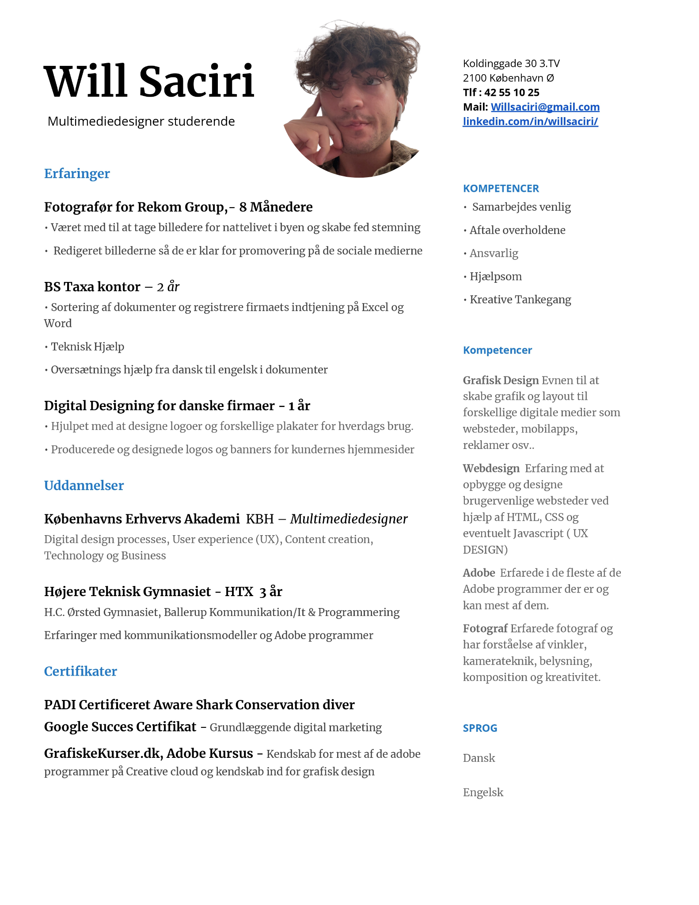

Hej, jeg er din venlige studerende Will! Jeg er altid glad og smilende, og jeg nyder virkelig at være omkring mennesker. Der er ikke noget bedre end at engagere mig i samtaler, lytte til andres historier og dele mine egne. Jeg elsker at skabe en varm og indbydende atmosfære, hvor alle føler sig velkomne og værdsat. Det er så givende for mig at opbygge gode relationer med folk omkring mig.
Udover at være social har jeg en masse forskellige interesser, som bringer mig glæde. Jeg prioriterer min fysiske og mentale sundhed, så jeg er altid ivrig efter at træne og holde mig i form. Du vil ofte finde mig i fitnesscentret, hvor jeg udfordrer mig selv og nyder fordelene ved en sund livsstil.
Når jeg ikke er på træningscenteret, er jeg vild med at spille. Uanset om det er boldspil i parken, brætspil med venner eller videospil, er jeg altid klar til at have det sjovt og konkurrere med et smil på læben. Jeg elsker den sociale dynamik, der opstår, når folk kommer sammen omkring spil og konkurrencer.
En af mine store passioner er fotografering. Jeg har altid haft et øje for detaljer, og jeg elsker at fange øjeblikke med skønhed og æstetik. Gennem mit kamera udforsker jeg verden og fanger betydningsfulde øjeblikke, der kan bevares for evigt. Uanset om det er i naturen, på begivenheder eller i hverdagens øjeblikke, formår jeg at fange essensen og skabe billeder, der fortæller en historie.
Når jeg har brug for at slappe af og finde inspiration, finder jeg ofte ro i musikken. Jeg elsker at lytte til forskellige genrer og lade mig fordybe i rytmer og melodier, der fylder mit sind med glæde og kreativitet. Musik er en konstant kilde til inspiration for mig, og jeg ser det som en måde at udtrykke mig selv og fordybe mig i forskellige stemninger.
Endelig har jeg også en kulinarisk side, og jeg nyder virkelig at lave mad. Jeg elsker at eksperimentere med forskellige ingredienser, smage og konsistenser for at skabe velsmagende og nærende retter. Min passion for madlavning bringer mig glæde og tilfredsstillelse, og jeg elsker at dele mine kreationer med venner og familie.
Som en levende personlighed er jeg altid åben for nye oplevelser og søger altid efter det positive i livet. Med min entusiasme for mennesker, træning, spil, fotografering, musik og madlavning bringer jeg en lys og venlig atmosfære til enhver situation. Jeg ser frem til at dele gode stunder med mine naboer og skabe minder